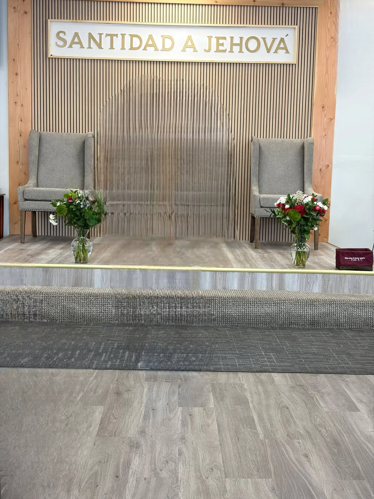

Taylorsville · Utah
Somos un lugar de fe y esperanza.
Una comunidad del Movimiento Misionero Mundial donde las familias crecen, se restauran y encuentran un hogar. Ven tal como eres: aquí hay un lugar para ti.
Quiénes somos
Bienvenidos al Movimiento Misionero Mundial
Somos una obra de fe presente en más de 80 países, comprometida en compartir el mensaje de nuestro Señor Jesucristo para transformar vidas, restaurar familias y fomentar una fe viva que impacta al mundo.
80+
Países donde la obra está presente
60+
Años sirviendo a las familias
4
Reuniones cada semana en el templo
1
Mensaje: Cristo, la esperanza del mundo
Agenda ministerial
Te esperamos cada semana
Los próximos siete días en el templo. Si un culto ya tiene programa, tócalo para ver quiénes participan.
Todas las reuniones se realizan en el templo de Taylorsville.
Ver horarios completosLemas
Conoce nuestro lema 2026
Cada año la obra recibe una consigna que marca su caminar. Recorre los lemas y descubre el mensaje detrás de cada uno.
Noticias
Lo que Dios hace en el mundo
Últimas publicaciones del Movimiento Misionero Mundial internacional.
Cargando noticias…
Medios
Acompáñanos desde donde estés
Radio, televisión y publicaciones para seguir alimentando tu fe durante la semana.


Dónde estamos
Te esperamos en el templo
Taylorsville, a pocos minutos de Salt Lake City. Hay estacionamiento y alguien te recibirá en la puerta.
Peticiones
¿Necesitas oración?
No tienes que pasar por esto solo. Escríbenos tu petición y nuestro equipo pastoral orará contigo esta misma semana.
Envía tu petición
Confidencial y sin compromiso. Te respondemos personalmente.
Escribir por WhatsAppTambién puedes llamarnos al (385) 622-9878